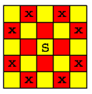
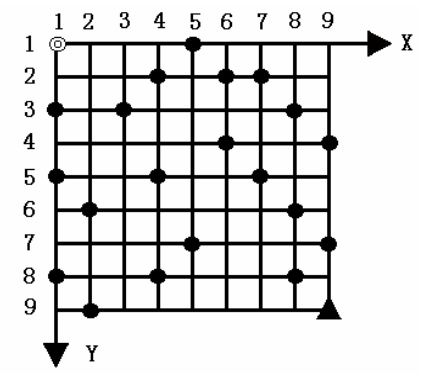
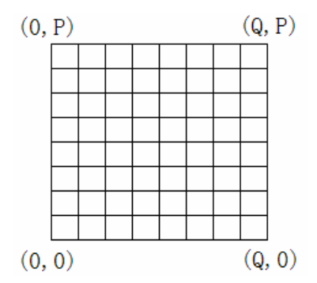
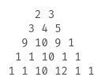

网络流 24 题
其实是 23 题。
餐巾计划问题
题意：一个餐厅在相继的 \(N\) 天里,每天需用的餐巾数不尽相同。假设第 \(i\) 天需要 \(r_i\) 块餐巾。餐厅可以购买新的餐巾,每块餐巾的费用为 \(p\) 分;或者把旧餐巾送到快洗部,洗一块需 \(m\) 天,其费用为 \(f\) 分;或者送到慢洗部,洗一块需 \(n\) 天\((n>m)\),其费用为 \(s\) 分 \((s<f)\)。
每天结束时,餐厅必须决定将多少块脏的餐巾送到快洗部,多少块餐巾送到慢洗部,以及多少块保存起来延期送洗。但是每天洗好的餐巾和购买的新餐巾数之和,要满足当天的需求量。
试设计一个算法为餐厅合理地安排好 \(n\) 天中餐巾使用计划,使总的花费最小。编程找出一个最佳餐巾使用计划。
将每个点拆点，分别表示脏餐巾和干净的餐巾。
从源点向脏餐巾点连边，容量为 \(r_i\)，费用为 \(0\)。
从干净餐巾点向汇点连边，容量为 \(r_i\)，费用为 \(0\)。
从源点向干净餐巾点连边，容量为 \(r_i\)，费用为 \(p\)。
每个脏餐巾点向对应干净餐巾点连边，容量为 \(\infty\)，费用为 \(f/s\)。
从每个脏餐巾点向下一天的脏餐巾点连边，容量为 \(\infty\)，费用为 \(0\)。
跑最小费用最大流即可。
星际转移问题
题意：由于人类对自然资源的消耗，人们意识到大约在 2300 年之后，地球就不能再居住了。于是在月球上建立了新的绿地，以便在需要时移民。令人意想不到的是，2177 年冬由于未知的原因，地球环境发生了连锁崩溃，人类必须在最短的时间内迁往月球。
现有 \(n\) 个太空站位于地球与月球之间，且有 \(m\) 艘公共交通太空船在其间来回穿梭。每个太空站可容纳无限多的人，而太空船的容量是有限的，第 \(i\) 艘太空船只可容纳 \(h_i\) 个人。每艘太空船将周期性地停靠一系列的太空站，例如 \((1,3,4)\) 表示该太空船将周期性地停靠太空站 \(134134134\dots\)。每一艘太空船从一个太空站驶往任一太空站耗时均为 \(1\)。人们只能在太空船停靠太空站(或月球、地球)时上、下船。
初始时所有人全在地球上，太空船全在初始站。试设计一个算法，找出让所有人尽快地全部转移到月球上的运输方案。（只需要求最短时间）
人可以从某一站上船，在若干站以后下船，任意时刻船上的人不超过 \(h_i\)。我们将其转化为，到站之后所有人都下船，需要接着乘坐这艘船的再上船，否则原地等待。虽然在现实中看起来有病，但是限制条件被统一为：在时刻 \(t\rightarrow t+1\)，我们可以从某一站向另一站运输 \(h_i\) 个人。
于是可以建立一个分层图模型。我们枚举答案 \(ans\)。如果第 \(i\) 艘船时刻 \(t\) 在 \(u\) 点，时刻 \(t+1\) 在 \(v\) 点，我们就从 \(t\) 层 \(u\) 点连向 \(t+1\) 层 \(v\) 点，容量为 \(h_i\)。\(\forall t<ans\)，从 \(t\) 层 \(x\) 点连向 \(t+1\) 层 \(x\) 点，容量为 \(\infty\)。从 \(1\) 层地球向 \(ans\) 层月球跑最大流，超过 \(k\) 则可行。答案显然具有单调性。
飞行员配对方案问题
题意：第二次世界大战期间，英国皇家空军从沦陷国征募了大量外籍飞行员。由皇家空军派出的每一架飞机都需要配备在航行技能和语言上能互相配合的两名飞行员，其中一名是英国飞行员，另一名是外籍飞行员。在众多的飞行员中，每一名外籍飞行员都可以与其他若干名英国飞行员很好地配合。
一共有 \(n\) 个飞行员，其中有 \(m\) 个外籍飞行员和 \((n - m)\) 个英国飞行员，外籍飞行员从 \(1\) 到 \(m\) 编号，英国飞行员从 \(m + 1\) 到 \(n\) 编号。 对于给定的外籍飞行员与英国飞行员的配合情况，试设计一个算法找出最佳飞行员配对方案，使皇家空军一次能派出最多的飞机。
需要输出方案。
二分图最大匹配板子题
软件补丁问题
题意：T 公司发现其研制的一个软件中有 \(n\) 个错误，随即为该软件发放了一批共 \(m\) 个补丁程序。每一个补丁程序都有其特定的适用环境，某个补丁只有在软件中包含某些错误而同时又不包含另一些错误时才可以使用。一个补丁在排除某些错误的同时，往往会加入另一些错误。
换句话说，对于每一个补丁 \(i\)，都有 \(2\) 个与之相应的错误集合 \(B_1[i]\) 和 \(B_2[i]\)，使得仅当软件包含 \(B_1[i]\)中的所有错误，而不包含 \(B_2[i]\) 中的任何错误时，才可以使用补丁 \(i\)。补丁 \(i\) 将修复软件中的某些错误 \(F_1[i]\)，而同时加入另一些错误 \(F_2[i]\)。另外，每个补丁都耗费一定的时间。
试设计一个算法，利用 T 公司提供的 \(m\) 个补丁程序将原软件修复成一个没有错误的软件，并使修复后的软件耗时最少。对于给定的 \(n\) 个错误和 \(m\) 个补丁程序，找到总耗时最少的软件修复方案。
分层图（状态压缩）最短路。
太空飞行计划问题
题意：W 教授正在为国家航天中心计划一系列的太空飞行。每次太空飞行可进行一系列商业性实验而获取利润。现已确定了一个可供选择的实验集合 \(E = \{ E_1, E_2, \cdots, E_m \}\)，和进行这些实验需要使用的全部仪器的集合 \(I = \{ I_1, I_2, \cdots, I_n \}\)。实验 \(E_j\) 需要用到的仪器是 \(I\) 的子集 \(R_j \subseteq I\)。
配置仪器 \(I_k\) 的费用为 \(c_k\) 美元。实验 \(E_j\) 的赞助商已同意为该实验结果支付 \(p_j\) 美元。W 教授的任务是找出一个有效算法，确定在一次太空飞行中要进行哪些实验并因此而配置哪些仪器才能使太空飞行的净收益最大。这里净收益是指进行实验所获得的全部收入与配置仪器的全部费用的差额。
对于给定的实验和仪器配置情况，编程找出净收益最大的试验计划。
最大权闭合子图模型。即从实验向仪器连边，选择了一个实验就需要选择它依赖的全部仪器。
本题图特殊（二分图），在一般图中，最小割输出方案需要使用 dfs。
试题库问题
题意：假设一个试题库中有 \(n\) 道试题。每道试题都标明了所属类别。同一道题可能有多个类别属性。现要从题库中抽取 \(m\) 道题组成试卷。并要求试卷包含指定类型的试题。试设计一个满足要求的组卷算法。
对于给定的组卷要求，计算满足要求的组卷方案。
从源点向每个题连边，容量为 \(1\)。从每个题向它的类别连边，容量为 \(1\)。从每个类别向汇点连边，容量为需求的题数。跑最大流即可。输出方案十分容易。
最小路径覆盖问题
题意：给定有向图 \(G=(V,E)\) 。设 \(P\) 是 \(G\) 的一个简单路(顶点不相交)的集合。如果 \(V\) 中每个定点恰好在 \(P\) 的一条路上，则称 \(P\) 是 \(G\) 的一个路径覆盖。\(P\) 中路径可以从 \(V\) 的任何一个定点开始，长度也是任意的，特别地，可以为 \(0\) 。\(G\) 的最小路径覆盖是 \(G\) 所含路径条数最少的路径覆盖。设计一个有效算法求一个 DAG (有向无环图) \(G\) 的最小路径覆盖。需要输出方案。
本题是 DAG 最小不相交路径覆盖的模板题。关于输出方案，如果二分图左侧点 \(u\) 匹配了右侧点 \(v\)，那么说明 \(v\) 要接在 \(u\) 后面，我们给 \(v\) 一个标记表示 \(v\) 不是链的起点，把 \(u\) 的后继赋为 \(v\) 即可。
魔术球问题
题意：有 \(n\) 根柱子，依照如下规则依次放入编号为 \(1,2,3,\cdots\) 的球。
- 每次只能在某根柱子的最上面放球。
- 同一根柱子中，任何两个相邻球的编号之和为完全平方数。
求 \(n\) 根柱子最多可以放多少个球，以及求方案。
本题答案显然具有单调性，因此可以倍增。
假设我们要求 \(1,2,\cdots,m\) 最少需要多少根柱子，如果 \(u,v\) 可以相邻，且 \(u<v\)，我们就从 \(u\) 向 \(v\) 连边。问题变为 DAG 的最小不相交路径覆盖。
最长不下降子序列问题
题意：给定正整数序列 \(x_1,x_2,\cdots,x_n\)。
- 计算其最长不下降子序列长度 \(s\)。
- 如果每个元素只允许使用一次，求最多可以取出多少个长为 \(s\) 的不下降子序列。
- 如果允许多次使用 \(x_1,x_n\)，求最多可以取出多少个不同的长度为 \(s\) 的不下降子序列。
第一问经典 \(O(nlogn)\)。
在第一问的基础上，我们求出了 \(f[i]\)，表示以 \(i\) 结尾的最长不下降子序列长度。
对于所有 \(f[u]+1=f[v]\quad u<v\)，\(v\) 可以接在 \(u\) 后面。
将每个点拆点，容量赋为 \(1\)。如果 \(u\) 可以转移到 \(v\)，就从 \(u\) 向 \(v\) 连边，容量为 \(1\)。从源点向所有 \(f[i]=1\) 的 \(i\) 连边，从所有 \(f[i]=s\) 的 \(i\) 向汇点连边，容量为 \(1\)。跑最大流即可。
第三问把 \(x_1,x_n\) 拆点的容量，和与源点汇点相连的点的容量改为 \(\infty\) 即可 。需要特判 \(s = 1\)。
航空路线问题
题意：给定一张航空图，图中顶点代表城市，边代表两城市间的直通航线，并且不存在任何两个城市在同一条经线上。现要求找出一条满足下述限制条件的且途经城市最多的旅行路线。
- 从最西端城市出发，单向从西向东途经若干城市到达最东端城市，然后再单向从东向西飞回起点（可途经若干城市）。
- 除起点城市外，任何城市只能访问一次。、
要输出方案。
问题等价于，求两条从起点到终点的路径，它们除了起点和终点之外没有公共点，且经过的点尽量多。
将每个点拆点，对于起点和终点，容量为 \(2\)，费用为 \(0\)。对于其余点，容量为 \(1\)，费用为 \(1\)。如果有航线 \((u,v) \quad u < v\)，从 \(u\) 向 \(v\) 连容量为 \(2\)，费用为 \(0\) 的边。
从起点向终点跑最大费用最大流即可。如果流量跑不满 \(2\) 则无解。
关于输出方案，可以找到所有从西向东有流量的边，它们一定形成一个环。直接 dfs 找即可。
方格取数问题
题意：有一个 \(m\) 行 \(n\) 列的方格图，每个方格中都有一个正整数。现要从方格中取数，使任意两个数所在方格没有公共边，且取出的数的总和最大，请求出最大的和。
将网格黑白染色，本题变为二分图最大独立集板子。也就是所有数的和减去最大匹配。
机器人路径规划问题
不会qwq
可以打表
1 |
|
圆桌问题
题意：有来自 \(m\) 个不同单位的代表参加一次国际会议。第 \(i\) 个单位派出了 \(r_i\) 个代表。
会议的餐厅共有 \(n\) 张餐桌，第 \(i\) 张餐桌可容纳 \(c_i\) 个代表就餐。
为了使代表们充分交流，希望从同一个单位来的代表不在同一个餐桌就餐。请给出一个满足要求的代表就餐方案。
从源点向每个单位连边，容量为 \(r_i\)。从每张餐桌向汇点连边，容量为 \(c_i\)。从每个单位向每张餐桌连容量为 \(1\) 的边。跑最大流。
如果某条单位到餐桌的边有流量，就代表这个单位派了一个代表到这张餐桌。
骑士共存问题
题意：在一个 \(n \times n\) 个方格的国际象棋棋盘上，马（骑士）可以攻击的棋盘方格如图所示。棋盘上某些方格设置了障碍，骑士不得进入。

对于给定的 \(n \times n\) 个方格的国际象棋棋盘和障碍标志，计算棋盘上最多可以放置多少个骑士，使得它们彼此互不攻击。
二分图最大独立集板子。
火星探险问题
题意：火星探险队的登陆舱将在火星表面着陆，登陆舱内有多部障碍物探测车。登陆舱着陆后，探测车将离开登陆舱向先期到达的传送器方向移动。
探测车在移动中还必须采集岩石标本。每一块岩石标本由最先遇到它的探测车完成采集。每块岩石标本只能被采集一次。岩石标本被采集后，其他探测车可以从原来岩石标本所在处通过。探测车不能通过有障碍的地面。
本题限定探测车只能从登陆处沿着向南或向东的方向朝传送器移动，而且多个探测车可以在同一时间占据同一位置。如果某个探测车在到达传送器以前不能继续前进，则该车所采集的岩石标本将全部损失。
用一个 \(p \times q\) 网格表示登陆舱与传送器之间的位置。登陆舱的位置在 \((x_1,y_1)\) 处，传送器的位置在 \((x_py_q)\) 处。
\(\begin{bmatrix} (x_1,y_1) & (x_2,y_1) & \dots & (x_{p-1},y_1) & (x_p,y_1) \\ (x_1,y_2) & (x_2,y_2) & \dots & (x_{p-1},y_2) & (x_p,y_2) \\ \dots & \dots & \dots & \dots & \dots \\ (x_1,y_{q-1}) & (x_2,y_{q-1}) & \dots & (x_{p-1},y_{q-1}) & (x_p,y_{q-1}) \\ (x_1,y_q) & (x_2,y_q) & \dots & (x_{p-1},y_q) & (x_p,y_q) \end{bmatrix}\)
给定每个位置的状态，计算探测车的最优移动方案，使到达传送器的探测车的数量最多，在此前提下探测车采集到的岩石标本的数量最多。
将每个点拆点，如果不是障碍，则连容量为 \(\infty\)，费用为 \(0\) 的边。如果是石块，则额外添加一条容量为 \(1\)，费用为 \(1\) 的边。
如果可以从 \((x,y)\) 到 \((x',y')\)，则从 \((x,y)\) 向 \((x',y')\) 连容量为 \(\infty\)，费用为 \(0\) 的边。
跑最大费用最大流即可。
关于输出方案，我们看每个点拆点之后的边的流量，就可以求出每个点被经过的次数，直接 dfs。
最长k可重区间集问题
题意：给定实直线 \(\text{L}\) 上 \(n\) 个开区间组成的集合 \(\mathbf{I}\)，和一个正整数 \(k\)，试设计一个算法，从开区间集合 \(\mathbf{I}\) 中选取出开区间集合 \(\mathbf{S}\subseteq\mathbf{I}\)，使得在实直线 \(\text{L}\) 上的任意一点 \(x\)，\(\text{S}\) 中包含 \(x\) 的开区间个数不超过 \(k\)，且 \(\sum_{z\in\text{S}}\lvert z\rvert\) 达到最大（\(\lvert z\rvert\) 表示开区间 \(z\) 的长度）。
这样的集合 \(\mathbf{S}\) 称为开区间集合 \(\mathbf{I}\) 的最长 \(k\) 可重区间集。\(\sum_{z\in\text{S}}\lvert z\rvert\) 称为最长 \(k\) 可重区间集的长度。
对于给定的开区间集合 \(\mathbf{I}\) 和正整数 \(k\)，计算开区间集合 \(\mathbf{I}\) 的最长 \(k\) 可重区间集的长度。
本题类似于 [NOI2008] 志愿者招募，即类似区间覆盖问题的转化。
我们先将开区间离散化为闭区间 \([l,r]\)，记录其原始长度。
对于每个点 \(i\)，向 \(i + 1\) 连一条容量为 \(k\)，费用为 \(0\) 的边。
对于每个区间 \([l,r]\)，从 \(l\) 向 \(r+1\) 连一条容量为 \(1\)，费用为原始长度的边。
从源点向数轴起点连容量为 \(k\) 费用为 \(0\) 的边，从数轴终点向汇点连容量为 \(k\) 费用为 \(0\) 的边。
跑最大费用最大流即可。
最长k可重线段集问题
题意：给定平面 \(x-O-y\) 上 \(n\) 个开线段组成的集合 \(I\)，和一个正整数 \(k\) 。试设计一个算法，从开线段集合 \(I\) 中选取出开线段集合 \(S\subseteq I\) ,使得在 \(x\) 轴上的任何一点 \(p\)，\(S\) 中与直线 \(x=p\) 相交的开线段个数不超过 \(k\)，且 \(\sum\limits_{z\in S}|z|\) 达到最大。这样的集合 \(S\) 称为开线段集合 \(I\) 的最长 \(k\) 可重线段集。\(\sum\limits_{z\in S}|z|\) 称为最长 \(k\) 可重线段集的长度。
对于任何开线段 \(z\)，设其断点坐标为 \((x_0,y_0)\) 和 \((x_1,y_1)\)，则开线段 \(z\) 的长度 \(|z|\) 定义为：
\(|z|=\lfloor\sqrt{(x_1-x_0)^2+(y_1-y_0)^2}\rfloor\)
对于给定的开线段集合 \(I\) 和正整数 \(k\)，计算开线段集合 \(I\) 的最长 \(k\) 可重线段集的长度。
本题与上一道题相差无几，区别在于，线段垂直与 \(x\) 轴的时候，其投影是一个点。可以将投影等比例放大 \(2\) 倍。即上一题我们只关心整点的覆盖情况，现在我们关心所有形如 \(0.5a\) 的点的覆盖情况。
汽车加油行驶问题
题意：给定一个 \(N \times N\) 的方形网格，设其左上角为起点 ◎，坐标 \((1,1)\)，\(X\) 轴向右为正， \(Y\) 轴向下为正，每个方格边长为 \(1\) ，如图所示。

一辆汽车从起点 ◎ 出发驶向右下角终点 ▲，其坐标为 \((N,N)\)。
在若干个网格交叉点处，设置了油库，可供汽车在行驶途中加油。汽车在行驶过程中应遵守如下规则:
- 汽车只能沿网格边行驶，装满油后能行驶 \(K\) 条网格边。出发时汽车已装满油，在起点与终点处不设油库。
- 汽车经过一条网格边时，若其 \(X\) 坐标或 \(Y\) 坐标减小，则应付费用 \(B\) ，否则免付费用。
- 汽车在行驶过程中遇油库则应加满油并付加油费用 \(A\)。
- 在需要时可在网格点处增设油库，并付增设油库费用 \(C\)(不含加油费用 \(A\) )。
设计一个算法，求出汽车从起点出发到达终点所付的最小费用。
显然我们不会增设油库两次，可以跑分层图最短路。
分为 \(k + 1\) 层，第 \(x\) 层表示汽车还能行驶 \(x\) 条边。
对于第 \(id\) 层，如果点 \((x,y)\) 已有油库，且 \(id \neq k\)，我们从第 \(id\) 层 \((x,y)\) 连向第 \(k\) 层 \((x,y)\) 边权为 \(a\)。
否则，如果 \(id \neq 0\)，我们从第 \(id\) 层 \((x,y)\) 向第 \(id -1\) 层 \((x',y')\) 连边，权值为 \(b\) 或 \(0\)。从第 \(id\) 层 \((x,y)\) 向第 \(k\) 层 \((x,y)\) 连边，权值为 \(c+a\)。
建立一个虚拟终点 \(t\)，\(\forall id\)，从第 \(id\) 层 \((n,n)\) 向 \(t\) 连边。第 \(k\) 层 \((1,1)\) 到 \(t\) 的最短路即为所求。
孤岛营救问题
题意：1944 年，特种兵麦克接到国防部的命令，要求立即赶赴太平洋上的一个孤岛，营救被敌军俘虏的大兵瑞恩。瑞恩被关押在一个迷宫里，迷宫地形复杂，但幸好麦克得到了迷宫的地形图。迷宫的外形是一个长方形，其南北方向被划分为 \(N\) 行，东西方向被划分为 \(M\) 列，于是整个迷宫被划分为 \(N\times M\) 个单元。每一个单元的位置可用一个有序数对(单元的行号，单元的列号)来表示。南北或东西方向相邻的 \(2\) 个单元之间可能互通，也可能有一扇锁着的门，或者是一堵不可逾越的墙。迷宫中有一些单元存放着钥匙，并且所有的门被分成 \(P\) 类，打开同一类的门的钥匙相同，不同类门的钥匙不同。
大兵瑞恩被关押在迷宫的东南角，即 \((N,M)\) 单元里，并已经昏迷。迷宫只有一个入口，在西北角。也就是说，麦克可以直接进入 \((1,1)\) 单元。另外，麦克从一个单元移动到另一个相邻单元的时间为 \(1\)，拿取所在单元的钥匙的时间以及用钥匙开门的时间可忽略不计。
试设计一个算法，帮助麦克以最快的方式到达瑞恩所在单元，营救大兵瑞恩。
分层图最短路，分 \(2^P\) 层，表示当前的钥匙集合。直接跑分层图最短路。
深海机器人问题
题意：深海资源考察探险队的潜艇将到达深海的海底进行科学考察。
潜艇内有多个深海机器人。潜艇到达深海海底后，深海机器人将离开潜艇向预定目标移动。
深海机器人在移动中还必须沿途采集海底生物标本。沿途生物标本由最先遇到它的深海机器人完成采集。
每条预定路径上的生物标本的价值是已知的，而且生物标本只能被采集一次。
本题限定深海机器人只能从其出发位置沿着向北或向东的方向移动，而且多个深海机器人可以在同一时间占据同一位置。
用一个 \(P\times Q\) 网格表示深海机器人的可移动位置。西南角的坐标为 \((0,0)\)，东北角的坐标为 \((Q,P)\) 。

给定每个深海机器人的出发位置和目标位置，以及每条网格边上生物标本的价值。
计算深海机器人的最优移动方案， 使深海机器人到达目的地后，采集到的生物标本的总价值最高。
不需要输出方案。
若 \((x,y)\) 可以到达 \((x',y')\)，则连一条容量为 \(\infty\)，费用为 \(0\) 的边。再连一条容量为 \(1\)，费用为标本价值的边。
从源点向所有出发点连容量为 \(k\)，费用为 \(0\) 的边。从所有终点向汇点连容量为 \(k\)，费用为 \(0\) 的边。
跑最大费用最大流即可。
数字梯形问题
题意：给定一个由 \(n\) 行数字组成的数字梯形如下图所示。

梯形的第一行有 \(m\)个数字。从梯形的顶部的 \(m\) 个数字开始，在每个数字处可以沿左下或右下方向移动，形成一条从梯形的顶至底的路径。
分别遵守以下规则：
- 从梯形的顶至底的 \(m\) 条路径互不相交；
- 从梯形的顶至底的 \(m\) 条路径仅在数字结点处相交；
- 从梯形的顶至底的 \(m\) 条路径允许在数字结点相交或边相交。
求分别依照三个规则行走，能获得的最大数字总和。
将每个点拆点，若 \((x,y)\) 能走到 \((x',y')\) 则连边。对于三种情况：
- 拆点的容量为 \(1\)，费用为点权。点之间的边容量为 \(1\)，费用为 \(0\)。
- 拆点的容量为 \(\infty\)，费用为点权。点之间的边容量为 \(1\)，费用为 \(0\)。
- 拆点的容量为 \(\infty\)，费用为点权。点之间的边容量为 \(\infty\)，费用为 \(0\)。
分别跑最大费用最大流。
分配问题
题意：有 \(n\) 件工作要分配给 \(n\) 个人做。第 \(i\) 个人做第 \(j\) 件工作产生的效益为 \(c_{ij}\)。试设计一个将 \(n\) 件工作分配给 \(n\) 个人做的分配方案，使产生的总效益最大。
二分图最大带权匹配板子。
运输问题
题意：W 公司有 \(m\) 个仓库和 \(n\) 个零售商店。第 \(i\) 个仓库有 \(a_i\) 个单位的货物；第\(j\) 个零售商店需要 \(b_j\) 个单位的货物。
货物供需平衡，即 \(\sum\limits_{i=1}^{m}a_i=\sum\limits_{j=1}^{n}b_j\)
从第 \(i\) 个仓库运送每单位货物到第 \(j\) 个零售商店的费用为 \(c_{ij}\)。
试设计一个将仓库中所有货物运送到零售商店的运输方案，使总运输费用最少，或者最多。
从源点向每个仓库连边，容量为 \(a_i\)，费用为 \(0\)。从每个商店向汇点连边，容量为 \(b_i\)，费用为 \(0\)。从每个仓库向商店连边，容量为 \(\infty\)，费用为 \(c_{ij}\)。
分别跑最小费用最大流，最大费用最大流。
负载平衡问题
题意：G 公司有个沿铁路运输线环形排列的仓库，每个仓库存储的货物数量不等。如何用最少搬运量可以使个仓库的库存数量相同。搬运货物时，只能在相邻的仓库之间搬运。
本题与上下界网络流问题有着某种相似性。
首先求出所有仓库货物量的平均数，记为 \(x\)。记货物量为 \(v_i\)。
从源点，向所有货物量高于平均数的仓库连边，容量为 \(v_i-x\)，费用为 \(0\)。
从所有货物量低于平均数的仓库，向汇点连边，容量为 \(x-v_i\)，费用为 \(0\)。
从每个仓库，向相邻仓库连边，容量为 \(\infty\)，费用为 \(1\)。
跑最小费用最大流即可。